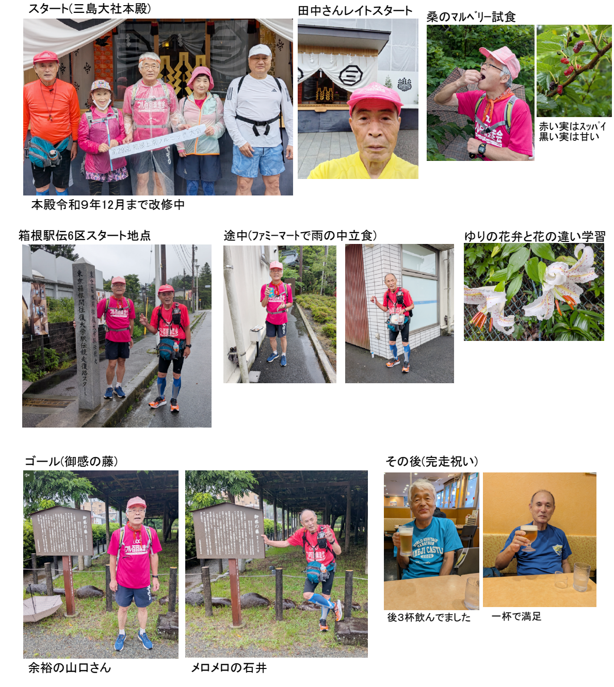

2026-06-28 04:40:44
2026年6月28日（日曜日）（場所 三島大社～小田原御感の藤、天候 雨、気温 25℃）（担当）石井
| No | 月例白鷺 | 氏名 | 種目 | タイム | フル百 |
|---|---|---|---|---|---|
| 1 | 98 | 田中 国貞 | フル | 8:42:37 | 746 |
| 2 | 333 | 山口 義治 | フル | 8:54:35 | 827 |
| 3 | 317 | 石井 功 | フル | 8:54:35 | 817 |
| 4 | 42 | 榎本 博康 | フル | 12:10:00 | 223 |
| 5 | 229 | 瀬戸 君子 | 1km | 0:10:00 | 749 |
| 6 | 227 | 松島 八十子 | 1km | 0:10:00 | 748 |
コメント 三島駅到着時、雨の中5名で三島大社本殿スタート 雨が強いので、瀬戸さん松島さん鳥居で種目変更 その後、田中さんレイトスタート スカイツリー付近まで雨、その後ゴールまで降ったり止んだりで雨を楽しめました
